|
CÓMO HICE UNA ESCULTURA
DE Dipsochelys dussumieri
Alfredo Fillol, 2007
Una escultura se puede hacer con
infinidad de técnicas, tantas como imaginación tenga el que la haga.
Normalmente se modela, talla o esculpe, salvo que uno sea moderno
y vanguardista y empiece a hacer chorradas y a retorcer cosas,
pegarlas; todo vale, salga lo que salga. En mi caso, casi siempre
modelo. Modelar, no confundir con moldear, es mover, quitar y poner
masas de un material dúctil, como puede ser la arcilla, cera o plastilina. Es más fácil modelar que esculpir, enfrentarse a un
volumen sólido de piedra, mármol o madera y quitar lo que sobre hasta
que salga de dentro la figura pensada, no es una tontería. Hoy en día
casi nadie esculpe como los chavales del renacimiento; hacer una pieza
grandecita de mármol tiene un costo en tiempo verdaderamente
impensable hoy en día y habría que comercializarla a precio de percebe
o de angula.
Cuando me decido a hacer una figura
nueva, como en el caso de la Aldabra a tamaño natural, lo primero que
hago es informarme todo lo que puedo de como es lo que voy a modelar;
tengo que saber tanto o más de la morfología y movimiento del tema que
el cliente más exigente, si no fuera así, ¿qué clase de escultor
realista sería?.
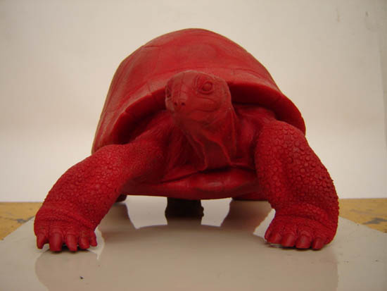
Foto 1
Una vez que mi cerebro cree que sabe y
memoriza las formas y detalles, hago un boceto a escala reducida. (Foto 1).
Intento que el boceto me convezca, y si no me convence, antes
de engañarme, pido consejo y lo retoco. Hasta que quede como debe, lo
proyecto con un haz de luz potente y encajo la sombra en las
acotaciones que previamente hago en un gran pliego de cartulina;
proyecto la sombra de frente, perfiles y trasero; señalo con un lápiz
el contorno de la sombra y ya tengo hecho los dibujos a tamaño que
quiero de la escultura. (Foto 2)

Foto 2
Las siluetas me dan pie para diseñar lo
que será el armazón, a mí me gusta hacerlo de gavillas de hierro, que
sustente la arcilla. El "esqueleto" es fundamental para poder
modelas en barro, la arcilla no se autosustenta.(Foto 3).
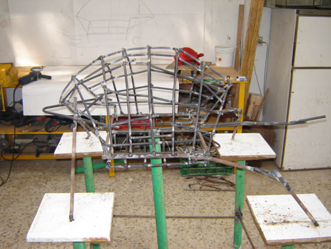
Foto 3
Una vez que está el esqueleto hecho, lo
recubro de tela metálica para que el barro "pegue bocaos" y no se
caiga. Empiezo a poner barro como loco; en dos o tres días tiene que
estar todo recubierto y con los volúmenes casi en su sitio y en una
semana más o menos tiene que estar afinada y terminada (fotos 4 y
5); si se tarda mucho en trabajar la arcilla, y aunque se tape
con plásticos, se corre el riesgo de que se seque, se cuartee, se
contraiga y se desprendan trozos.
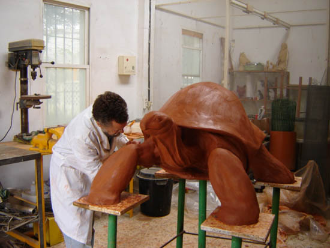
Foto 4
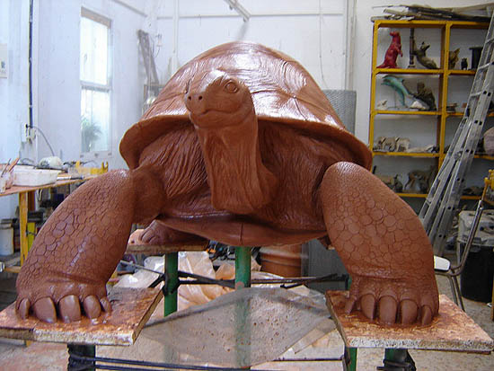
Foto 5
Ya está el original terminado, qué
bonito, que bien te ha quedado y esas cosas, pero la arcilla se seca y
hay que sacar el molde. Los moldes son de dos tipos, molde perdido,
normalmente en escayola y sirve para una reproducción (Fotos 6 y 7) y molde múltiple, que se hace en siliconas y otro tipo de gomas
(Foto 8) y sirven para sacar varias reproducciones. La
ventaja del molde perdido, sólo es el costo, la escayola está barata.
Una vez que gracias al molde de escayola tengo una primera copia en un
material resistente, estudio si le hago un molde de goma, para sacar
más reproducciones.
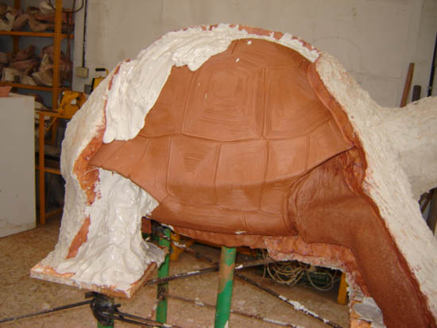
Foto 6
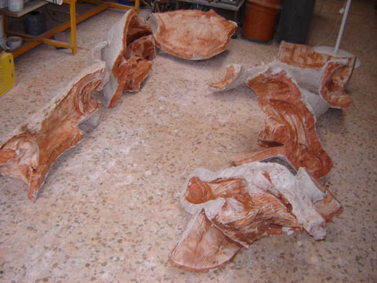
Foto 7
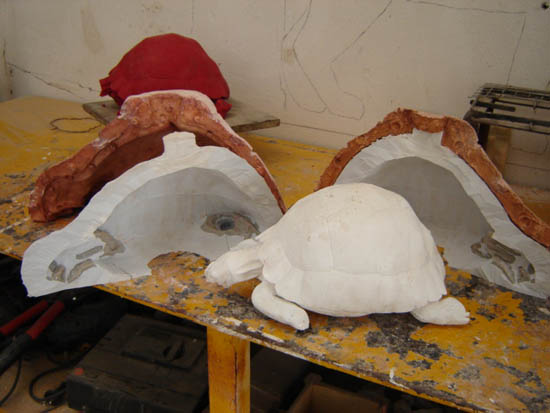
Foto 8
Las reproducciones o copias se hacen en
bronce o en materiales más modernillos como resinas de poliéster o
resinas époxi. Todo tiene su lado bueno y malo. El bronce, es el
material por excelencia, precioso y eterno, pero carísimo, más caro
todavía. Los presupuestos de dos fundiciones distintas que tengo de
la escultura de la Aldabra, rondan los nueve mil eurillos, millón y
medio de pesetas que le tengo que soltar al fundidor para que me haga
una copia en bronce, esto unido a mi trabajo y demás gastos pone la
escultura en bronce a unos precios desorbitados; estamos hablando de
una escultura grande, los bronces de sobremesa, de un tamañito mediano
son caros pero no imposibles. Como alternativa al bronce está las
resinas sintéticas; la de poliéster es buena pero tiene dos problemas,
se contrae cuando endurece y aún siendo durísima al rayado, es
relativamente frágil al impacto; la resina époxi no contrae el
endurecer, perfecto, y es dura al rayado y muy resistente al impacto,
es bastante más cara que la de poliéster pero merece la pena
sobradamente.
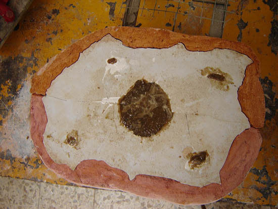
Foto 9
Si la escultura es mediana no me
complico la vida y la hago maciza (Foto 9), pero si es grande, la
hago hueca, como en el caso de la Aldabra, que conseguí que con un
peso de 47 kilogramos pueda la escultura con un peso encima de una
persona. La hice hueca, aproximadamente de dos cms y medio de espesor,
con fibra de vidrio. Usé una resina epoxi de primera calidad, en
pasta, para que la capa primera, que es la que se ve y toma el detalle
del molde no se descolgara (Fotos 10 y 11) y otra resina líquida
para hacer el estratificado, con fibra de vidrio; con dos o tres capas
de resina y fibra, se le da una resistencia extraordinaria (Fotos 12
y 13).
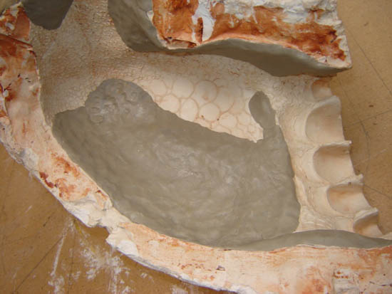
Foto 10
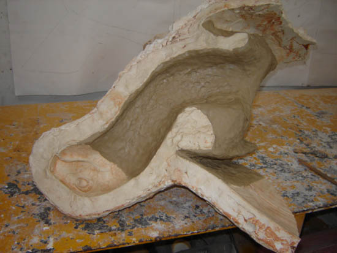
Foto 11
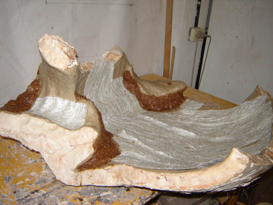
Foto 12
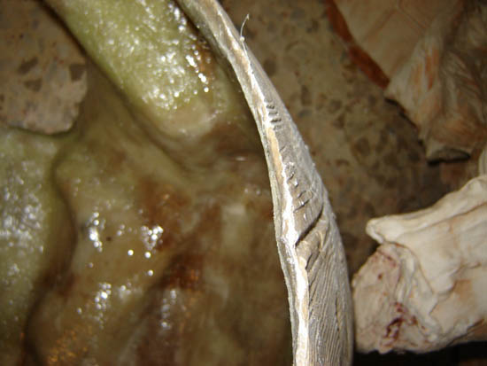
Foto 13
Cuando el proceso de las resinas está
terminado, se destruye el molde de escayola, y tenemos la escultura
entera o por piezas (Fotos 14 y 15), según como se halla pensado
hacer; en el caso de la Aldabra la hice en cinco piezas, porque los
moldes pesaban una barbaridad y no era fácil su encaje para hacer la
reproducción entera, preferí encajar las piezas según las descubría
de la escayola (Fotos 16 y 17).

Foto 14
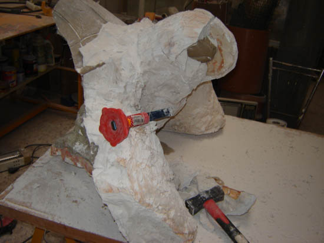
Foto 15
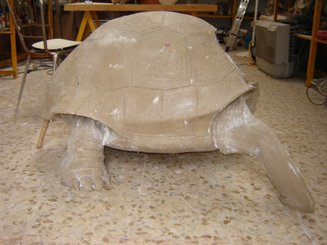
Foto 16

Foto 17
Sólo queda repasar las rebabas e
imperfecciones y terminar con una pátina símil bronce (Fotos 18 y 19).
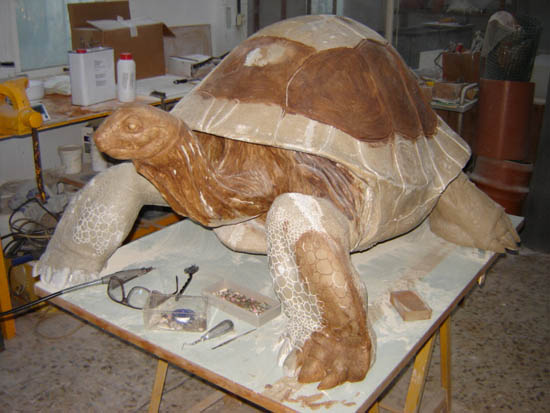
Foto 18
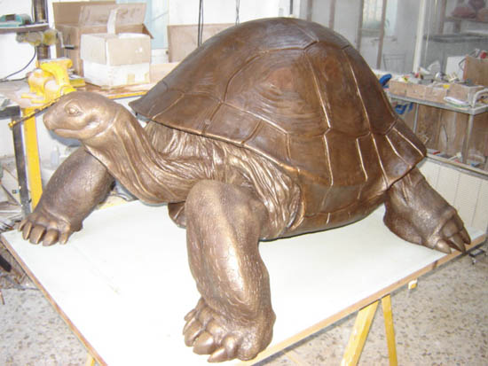
Foto 19
Escultura terminada y colocada. (Fotos
20 y 21)
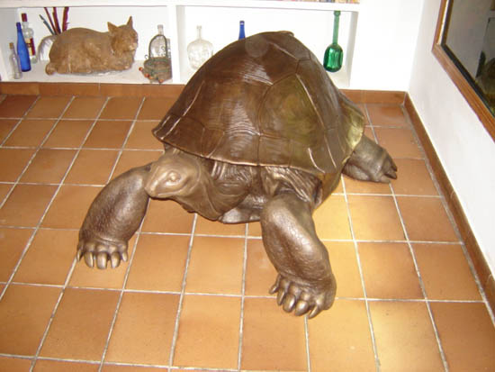
Foto 20
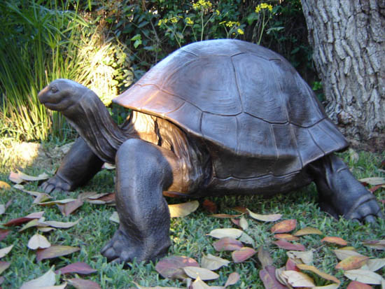
Foto 21
Qué suerte tienen los pintores, una
tela, cuatro listones de madera y mil pelas de pintura y ya está hecho
el cuadro.
Espero os entretenga esta disertación
técnica.
|